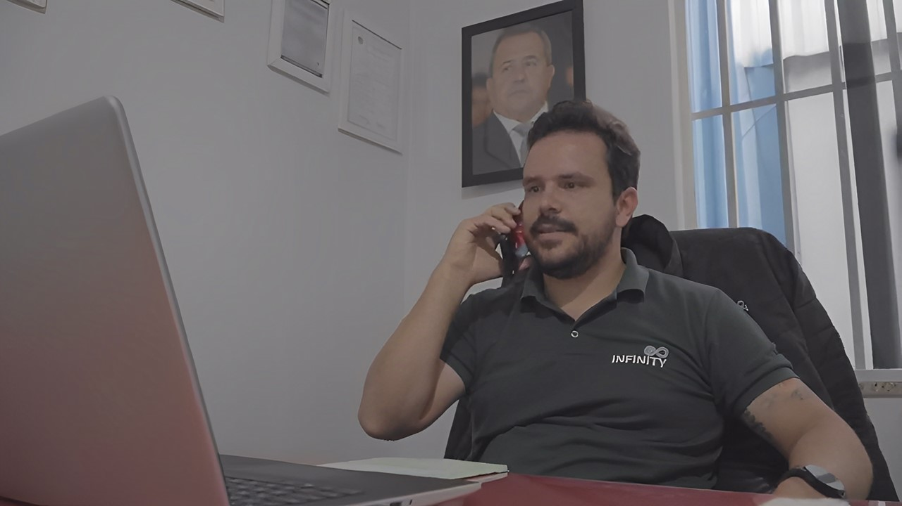
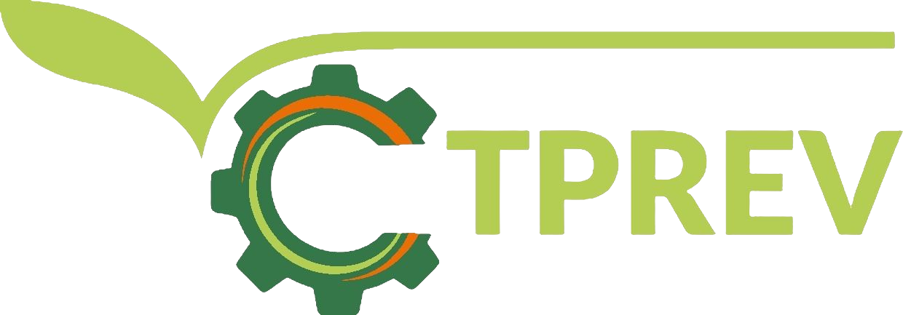

Operação
A logística por trás da sustentabilidade.
Promessa de coleta só vale quando há caminhão, equipamento e rotina por trás. A nossa frota é própria — e dimensionada para cada carga.
Frota própria
- Truck — versatilidade para rotas e volumes variados.
- Roll-on Roll-off — troca rápida de caçambas, pátio sempre livre.
- Garra Sucateira — manuseio de sucata e volumosos com segurança.
- Reboque Julieta — composição para dobrar a capacidade por viagem.
- Caçambas móveis de 5 a 39 m³ — do pequeno gerador à grande planta.


Rotina de coleta
Cronograma programado por perfil de gerador: o resíduo é retirado antes de virar gargalo — madeira, plástico, metal, papel e orgânicos de fazendas e indústrias.
Unidades
Luziânia (GO) · Unaí (MG) · Tangará (MT) · articulação no Distrito Federal. Detalhes e rotas na seção de mapa da home.